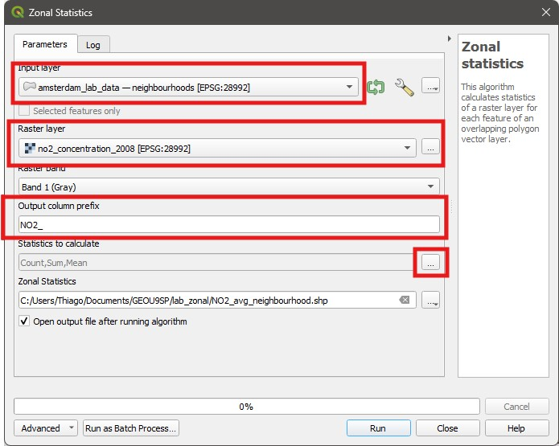
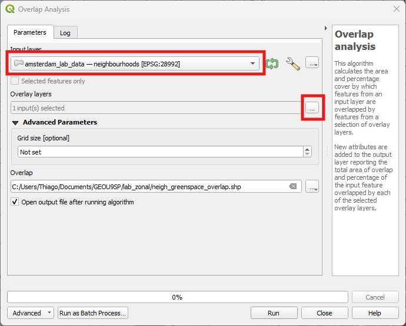
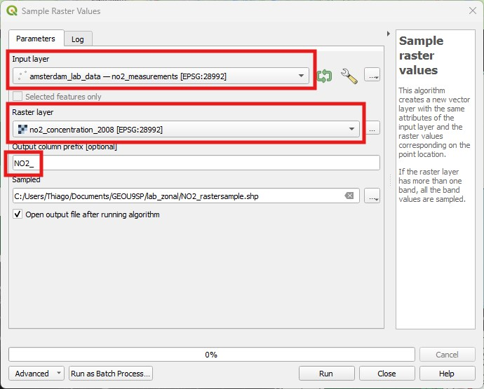
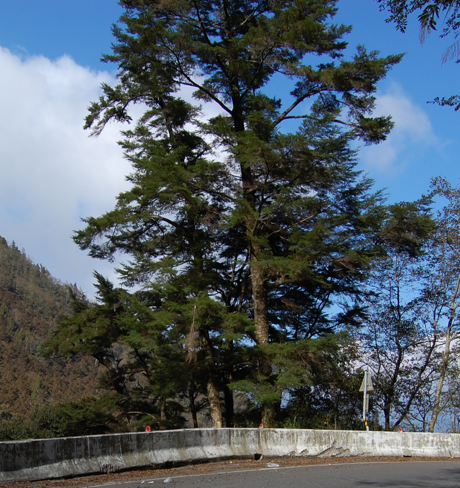

12 Lab 12 - Zonal Statistics and Overlap Analysis
So far we have been mostly keeping to one of the two main data models: vectors and rasters. We have learned several ways to work with either, but they are mostly treated separately. The two exceptions are the Mask by Layer tool that lets us clip a raster based on a vector shape, and the Polygonize tool, which converts rasters into vectors.
In this lab you will learn about Zonal Statistics (QGIS Documentation), one of the main tools that mixes vectors and rasters, and lets you compute pixel statistics for regions defined by polygons. You will also learn about a related tool for points, called Sample Raster Values (QGIS Documentation), and a cousin tool to Zonal Statistics, the Overlap Analysis tool (QGIS Documentation).
12.1 Guided Exercise 1 - Data preparation
In this exercise, we will look at air pollution data from the city of Amsterdam in the Netherlands. Importantly for this exercise, Amsterdam is broken up into 8 districts or boroughs (stadsdelen), which are further divided into neighbourhoods (buurten).
More specifically, we will be looking at NO\(_2\) (Nitrogen Dioxide) pollution. NO\(_2\) is mainly produced by combustion engines, and impacts respiratory health.
The data for this exercise has been pre-packaged and can be downloaded here, and it consists of the following datasets:
- A geopackage file containing four layers:
- The location of several NO2 measurement sites, as point vectors.
- The extent and location of parks and green spaces in Amsterdam, as a polygon vector layer.
- The official boundaries of Amsterdam’s neighbourhoods, as polygon vectors.
- A rectangular polygon defining the extent of the study.
- A CSV file containing annual NO\(_2\) measurements for several sites, including the sites identified in the geopackage above.
If you are curious, these files were obtained from the City of Amsterdam geodata portal.
- A raster file showing modelled annual NO2 concentrations for the year 2008, produced as an output from this research article. The original files cover all of the Netherlands, but have been cropped to make the file size more manageable for this exercise.
- Download the data and create a project folder and a QGIS project for this exercise. The project should be set to EPSG:28992 - Amersfoort / RD New, the standard CRS for the Netherlands.
Two useful websites to find information about coordinate reference systems are https://epsg.io/ and https://spatialreference.org/. Search for EPSG:28992 in thee websites and see what information they provide.
- Now load all five layers and the CSV file into your project. This CSV file has no coordinates, so you can just drag it to your
Layerspanel without needing to use theImport Delimited Texttool.
12.2 Guided Exercise 2 - Zonal Statistics
You are now a GIS analyst at the Amsterdam city administration, and have been asked to analyse the pollution levels per city neighbourhood using the data for 2008 published by the scientific study above. Specifically, you have been asked to calculate the average NO\(_2\) concentrations for each neighbourhood.
You have access to the neighbourhood boundaries in vector format, but the study data is given as a raster data.
Using the GIS tools you have learned so far, how would you accomplish this?
The right way to accomplish this task is to use the Zonal Statistics tool. It will calculate descriptive statistics (min, max, average, range, etc.) for raster values (pixels) contained within each polygon of a vector layer and output it as a new vector layer with the same polygons and attributes of the original vector layer, with added attribute columns for the statistics.
Go to the
Processingpanel and find theZonal statisticstool (NOTRaster layer zonal statistics), under theRaster analysiscategory. It will launch a new window.On the
Zonal Statisticswindow, select the neighbourhoods layer as theInput Layer, and the NO\(_2\) concentration map as theRaster Layer. Notice how you could select a specific band if your raster contained multiple bands. ForOutput column prefixwriteNO2_- this prefix will be added to the name of each calculated statistic to generate the new attributes. Right click on the...button to the right of theStatistics to calculatebox to see which statistics are available for calculation. In this case we only want the means, so you can uncheck all other boxes. Then save your layer appropriately andRunthenClose.

- Now style the new layer you obtained using a continuous colour scale to show NO\(_2\) concentrations for each neighbourhood.

- Load the
OpenStreetMaplayer (on theBrowser Panel, under theXYZ Tilescategory). Does it look like NO\(_2\) pollution is worse on densely urbanised areas?
12.3 Guided Exercise 3 - Overlap Analysis
As you continue with your GIS analysis, you notice you have also been given a map with all the parks and green spaces in Amsterdam, and you wonder if they could be related to improved air quality. Maybe you could create an attribute that computed the amount of green spaces within each neighbourhood, and then use that information. You have two polygon vector layers now - one of the neighbourhoods and another of the green spaces.
Again, using the GIS tools you have learned so far, how would you accomplish this?
- Go back to the
Processingpanel and find theOverlap Analysistool, under theVector Analysiscategory, and launch it. This tool only takes two parameters:Input layeris the main layer you want as output (the neighbourhood layer in this case), and theOverlay layersare the layers you want to calculate the overlap with (in our case, only one, the green spaces layer). Set these two parameters and then save your result to a proper location. A new layer will be produced.

This new layer has all the same attributes and polygons as the original neighbourhoods layer, but two additional fields, named with the name of the overlap layer followed by a _area or _pc suffix: the first gives you the overlap area (in the same units as the CRS you are using, so m\(^2\)), and the second gives you the percentage of area overlap. It should look somewhat like this:
- Style this new overlap layer to show the percentage of green spaces as a continuous colour. Does it seem to be inversely correlated to NO\(_2\) pollution?
12.4 Guided Exercise - Sample Raster Values
Zonal Statistics lets us sample and summarise raster values based on areas (i.e. polygons). But sometimes, we may be interested in knowing what the specific raster values under a point coordinate are. Again, as a GIS analyst, you have been now asked to determine if NO\(_2\) levels have declined between 2008 and 2023. But the point location measurements only go as far back as 2010, so you need to compare the 2023 field measurements to the 2008 modelled values.
Before we proceed with the analysis, we need to link the NO\(_2\) measured values (in the CSV file) with the measurement locations (one of the geopackage layers). You can do that using a
Join, and theCodeJfield of the CSV table and theCodefield of the locations layer.Now we can extract the concentration values from the 2008 raster using the
Sample Raster Valuestool. You will find it in theProcessingpanel, under theRaster Analysissection. Similarly to theZonal Statisticstool, you will be asked to select anInput Layer(the vector points) and aRaster Layer(the pollution raster), and to pick a prefix for the field name (we can useNO2_again). Save your result in the appropriate location and click onRunthenClose.

The new layer created by the
Sample raster valuestool will be a copy of the input point layer, but will have one additional attribute at the end, namedNO2_1. The *_1* refers to the band number. If the raster file had multiple bands, it would generate one column for each band. You can now use theField calculatorto calculate the difference between 2023 and 2008 concentrations as a new decimal number field.Style the layer to show the direction and amount of changes in emissions for each neighbourhood, using a divergent continuous colour scale (so that positive changes are shaded in one colour and negative changes as another - you can use the ColorBrewer palettes for that).
12.5 Independent Exercise - Taiwanese hemlock and climate change
12.5.1 Background
As the GIS specialist for an International NGO (Non-governmental organization), you have been tasked with generating a report on the possible susceptibility of the tree species Tsuga chinensis (Chinese Hemlock or Taiwanese Hemlock) to climate change in Taiwan.

12.5.2 Data Acquisition
For this exercise, I am giving you a pre-downloaded dataset, because the source files are large and also require a registration to download. But I am describing below how to download the original data - you will need it for the Final Project and the information is relevant if working with species distribution data is of interest to you in the future.
Download the data package from here.
The first step in your analysis is to obtain data on the distribution of T. chinensis. You go to the main source of species occurrence data worldwide, the Global Biodiversity Species Facility (GBIF). GBIF requires creating an account to download.
Once you have an account, go to the top left of the webpage and click on Get data > Ocurrences. You can search for data using the different parameters on the left column. Expand the Scientific name field and search for Tsuga chinensis. Then click on Download (above the table). The data will come as a tab-separated text file.
Then you would need climate data. There are many climatic datasets out there, but after doing some research you decide to use the Climatologies at High resolution for the Earth’s Land Surface Areas (CHELSA) database, which provides global maps of past, present and future climate data: https://chelsa-climate.org/.
To use this dataset, you need to understand the definition of the standard BIOCLIM variables. These are derived from a different climate dataset called WorldClim, and are a set of climatic descriptors devised to capture climatic conditions that are related to species survival. They are explained here:https://www.worldclim.org/data/bioclim.html. The CHELSA database also provides extended BIOCLIM variables (BIOCLIM+, https://chelsa-climate.org/exchelsa-extended-bioclim/)for additional important variables.
Since you are working with a plant species, you decide to use the following variables:
Bio5 = Max Temperature of Warmest Month (upper thermal tolerance)
Bio6 = Min Temperature of Coldest Month (lower thermal tolerance)
BIOCLIM+ gsp* = Growing Season Precipitation Sum, represents water availability during the growing season.
BIOCLIM+ gdd5 = Growing Degree Days above 5 Degrees Celsius. A ‘growing degree day’ is a day that has temperatures in the needed range for plant growth, and the variable is calculated by summing the temperature of all GDDs.
You note on the documentation that Bio 5 and Bio 6 are given in degrees Celsius, growing degree days are given as the total heat summed over all growing days, also in Celsius, and growing season precipitation has values in mm of rain.
CHELSA also provides data for future climate analysis, including multiple future date prediction targets, various Shared Socioeconomic Pathways (SSPs, aka climate scenarios), and predictions from different climate models in the CMPI6 group.
You settle on using projections for the SSP 370 (middle-of-the-road scenario) for the years 2081-2100 prediction, and to restrict your analysis to the average prediction of three climate model outputs:
IPSL-CM6A-LR (https://cmc.ipsl.fr/ipsl-climate-models/ipsl-cm6/)
MPI-ESM1-2-HR (https://gmd.copernicus.org/articles/12/3241/2019/)
MPI-ESM2-0 (https://www.jstage.jst.go.jp/article/jmsj/97/5/97_2019-051/_article)
Note: The CHELSA datasets come as global layers, but to reduce download sizes, I have already cropped them to cover Taiwan only. Don’t say I never did anything for you :-).
Finally, you decide to grab the Taiwan country borders from the GADM website.
12.5.3 Data Analysis
With that data in hand, you are ready to start your project. You prepare an initial list of the tasks you need to accomplish to achieve your goal:
Organise the data into a folder and then import the data into a QGIS project. You may add OpenStreetMap (from the XYZ Tiles) to help you to recognise where these data are located in the world. Also, open the attribute tables and raster info to understand the structure of each data file, unit, etc.
Import the T. chinensis species occurrence file. Although it is named CSV, you notice it uses tab as a custom column delimiter. The spatial information is on fields
decimalLatitudeanddecimalLongitude.Make sure the project CRS is adequate and that all data uses the same CRS, or reproject if not.
This exercise focuses on species observation in Taiwan, so clean up all the data to include only records from Taiwan, and only actual observations (e.g. not a specimen in a museum) - i.e. records having the word “observation” on the
basisofRecattribute field.Use the species occurrence points to extract the minimum and maximum values for each present climate layer, therefore determining the climate envelope of the species. You can then assume that any location where one or more of the climatic variables are outside this range is not suitable for the species’ survival.
Average the outputs of the three climatic models for each of your future climatic layers.
Find out which locations in the future will be within the climate envelope you calculated previously. (Hint: an area has to be within the envelope of all four variables to be considered suitable).
Calculate the total area of suitable habitat expected for T. chinensis in the years 2071-2100, according to the SSP370 scenario, and determine how much smaller/larger it is than the current suitable area.
Make a nice map showing your results.
Now that you have a plan in mind, execute it!
GIS operations to consider: Import Delimited Text File, Select by Location, Select by Expression, Sample Raster Values, Raster Calculator, Raster to Vector conversion, Field Calculator.
Obs: this is a very crude method to determine species distribution and niche, but this is a GIS module, not a Biogeography one. If you find this interesting, search for Species Distribution Modelling (SDM) or Environmental Niche Modelling (ENM). It is a well-developed field with specialised tools and methods, which nonetheless are still GIS operations at heart.